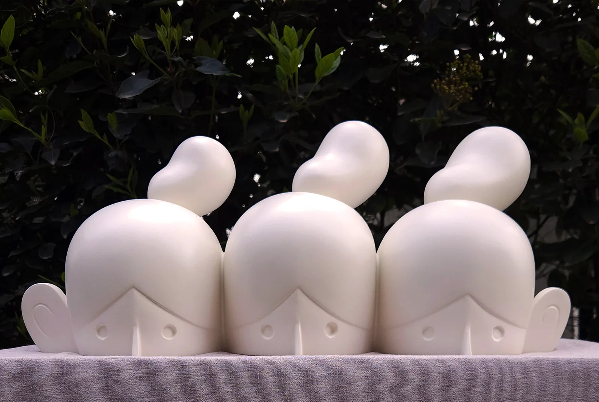
Too Much Emotion
Drowning, Splitting, Multiplying
- Year
- 2025
- Material
- Cast polyester
- Size
- 50 × 21 × 18 cm
Sculpture · Painting · Prints
2023 – 2026
A series shaped around breaking apart and rebuilding — inward-looking sculptures and paintings that carry impressions of the outside world.
Artist statement
The transition between figurative and abstract forms reveals the relationship I create between my inner world and the outside world. My sculpture and painting practices develop simultaneously — for me, making is not only a form of expression, but also a way of returning to the beginning and rebuilding myself again and again.
In this series, my sculptures embody an inward-looking, concentrated, and self-contained presence, while my paintings bring impressions of the outside world to the surface through movement and the passage of time. My relationship with nature and my shifting emotional states emerge as fluidity and movement across the surface.
This flow unfolds like the movement of fleeting emotions over time, leaving traces behind and carrying the memory of places through lived experiences. Too Much Emotion emerges from within this ongoing process and carries the courage to meet the viewer.
Too Much Emotion · 2023–2026
Cast polyester, 2025. Click a work to view it from every angle.

Too Much Emotion
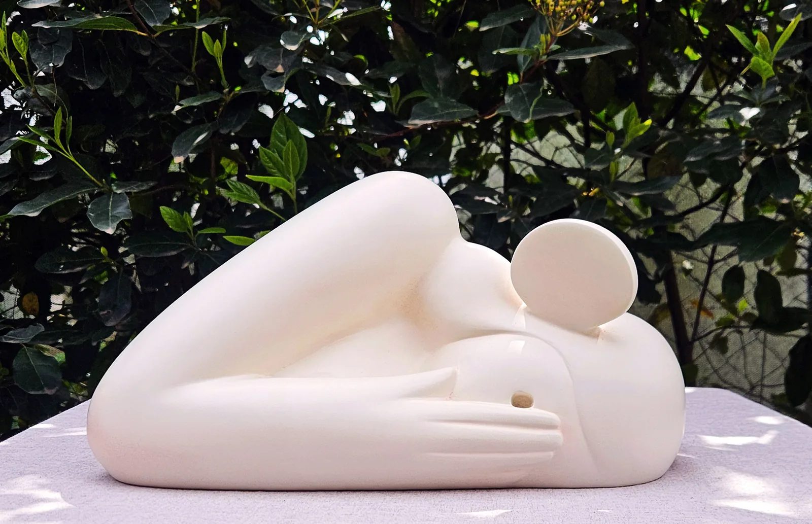
Too Much Emotion
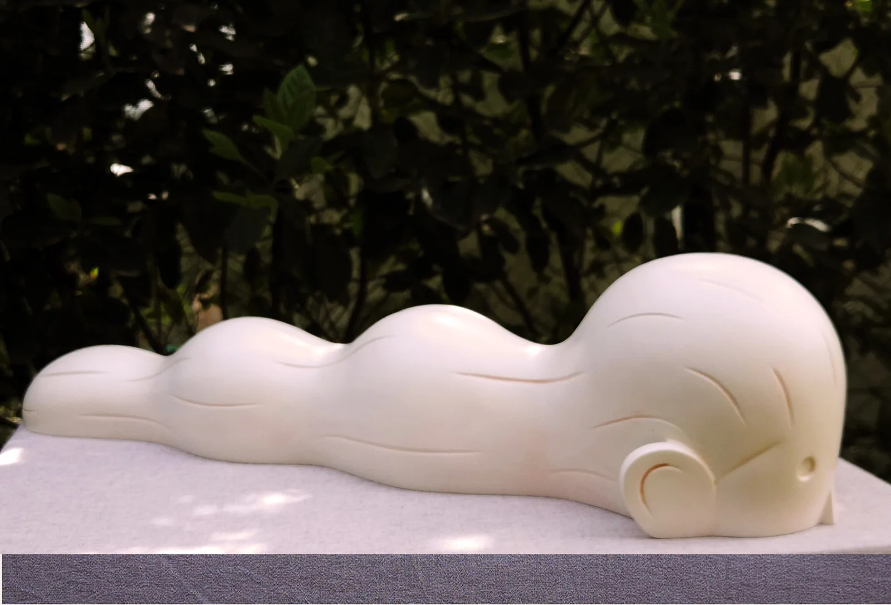
Too Much Emotion
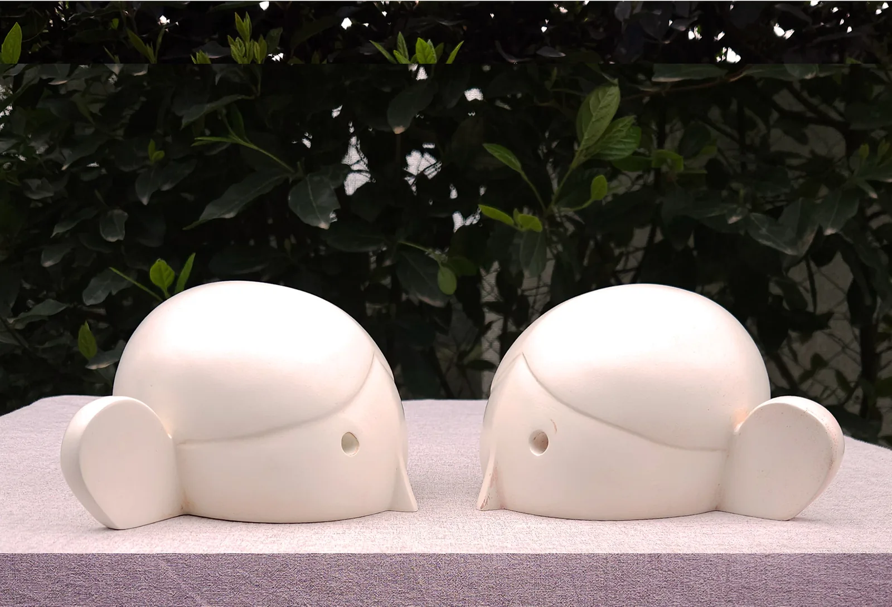
Too Much Emotion
Too Much Emotion · In My Garden
Impressions of the outside world — nature, movement and the passage of time in acrylic on canvas.
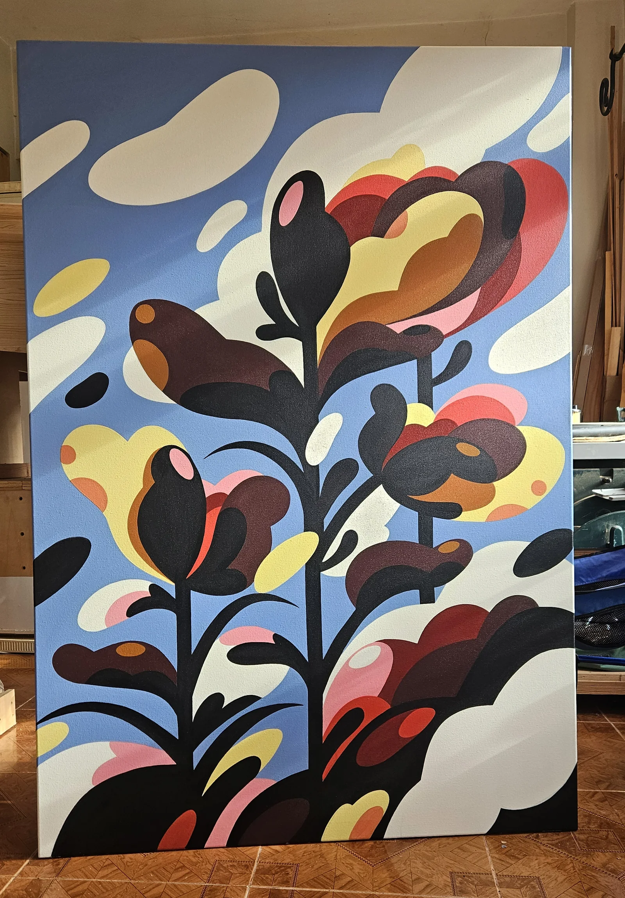
In My Garden · 2026 · Acrylic on canvas · 160 × 110 cm
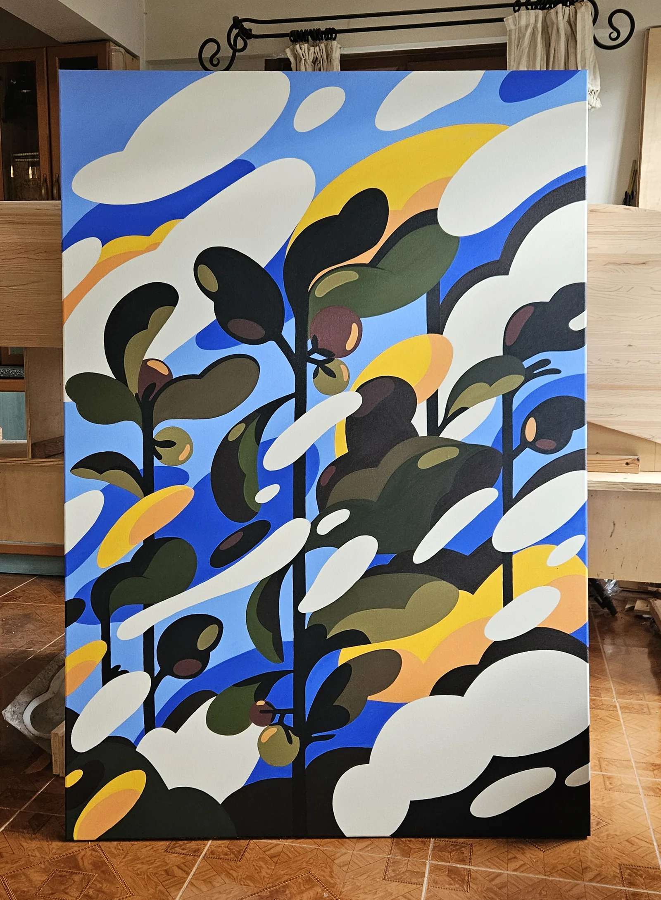
In My Garden · 2026 · Acrylic on canvas · 160 × 110 cm
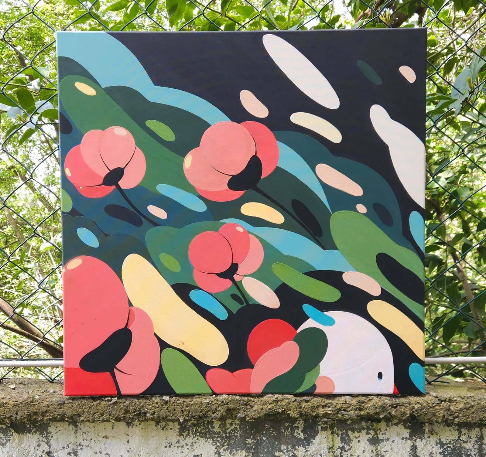
2026 · Acrylic on canvas · 70 × 70 cm
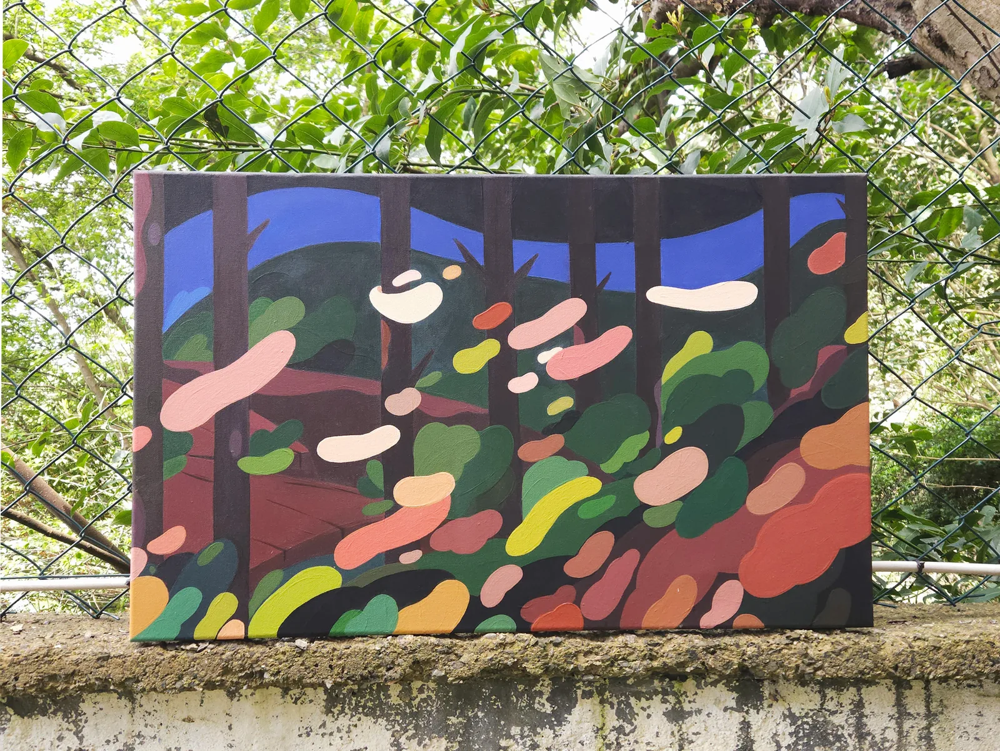
2025 · Acrylic on canvas · 80 × 50 cm
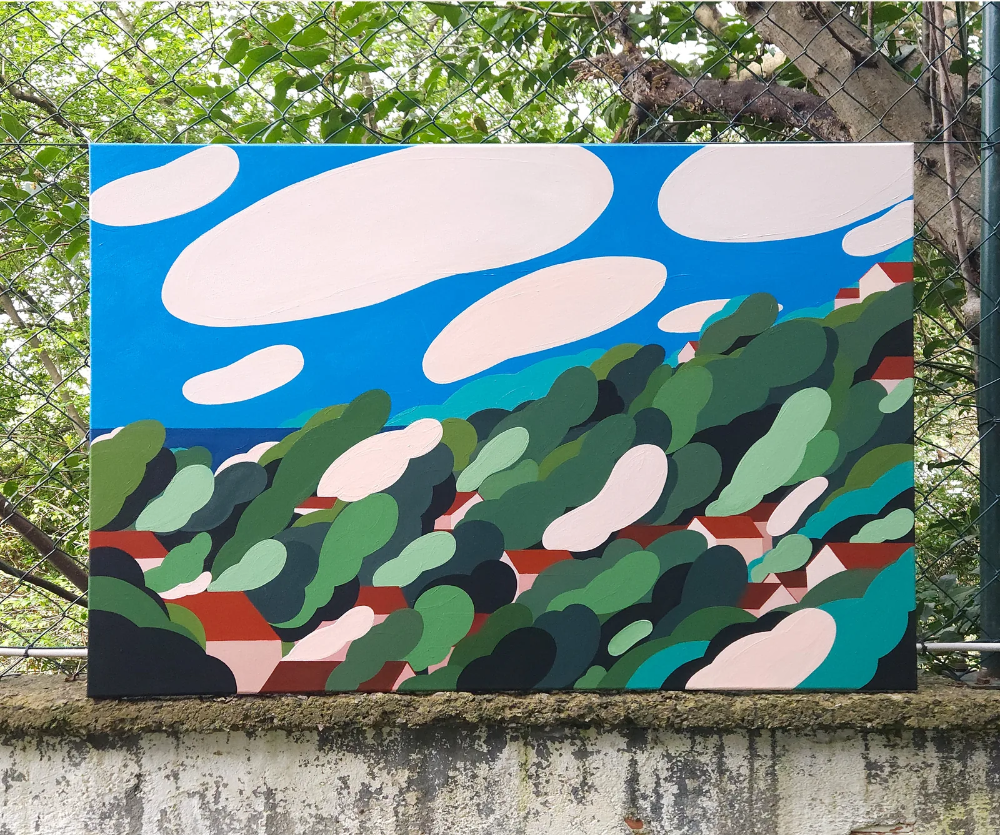
2025 · Acrylic on canvas · 120 × 60 cm
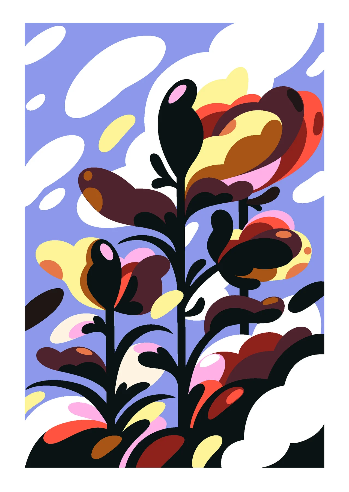
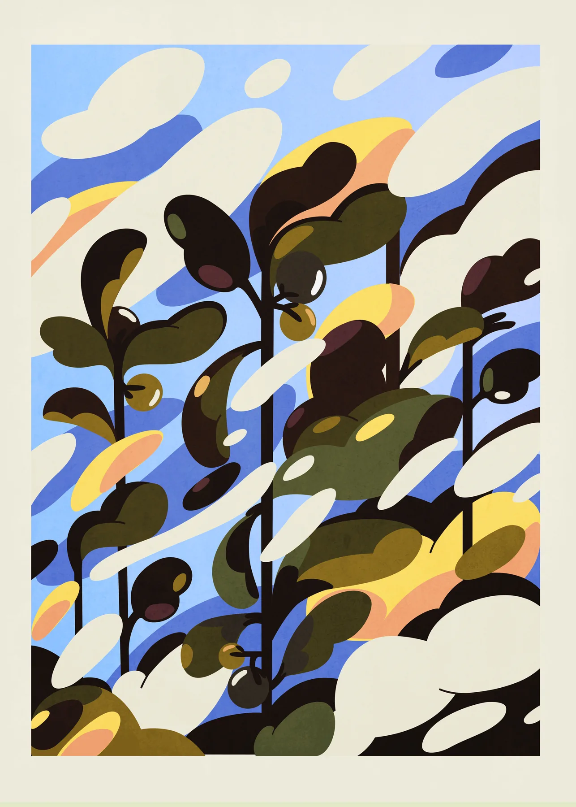
Prints
Fine art prints of Autumn Flowers and Green Tomatoes & Basil, in limited editions — each one signed and numbered by the artist.
Applied practice
Alongside her artistic practice, Sibel has collaborated with agencies, brands, and publishers on advertising, illustration, children's books, product and brand communication projects.
Her illustrated books have been published in Turkey, Australia, and South Korea.
A selection of her illustrations is available as fine art prints through Yaris Poster, an online art print gallery.
About
Sibel Açıkalın Akgün (b. 1983, Istanbul, Turkey) is a multidisciplinary artist working across sculpture, painting, illustration, and print.
She received her BFA in Sculpture from Anadolu University, Faculty of Fine Arts, and completed her MFA in Sculpture at Mimar Sinan Fine Arts University. She has participated in exhibitions, competitions, and public art projects, while continuing to work across both fine art and illustration.
She lives and works in Istanbul.
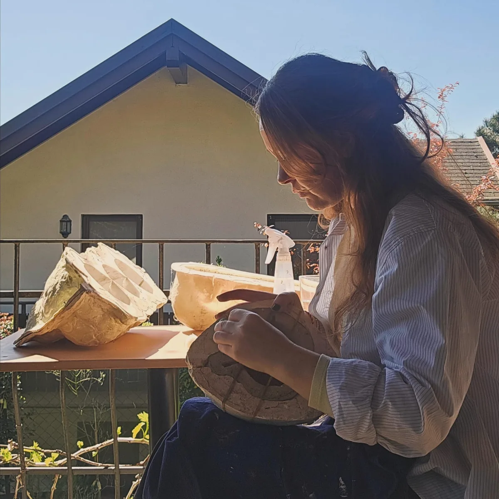